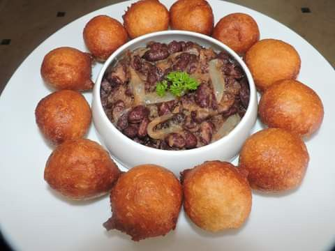
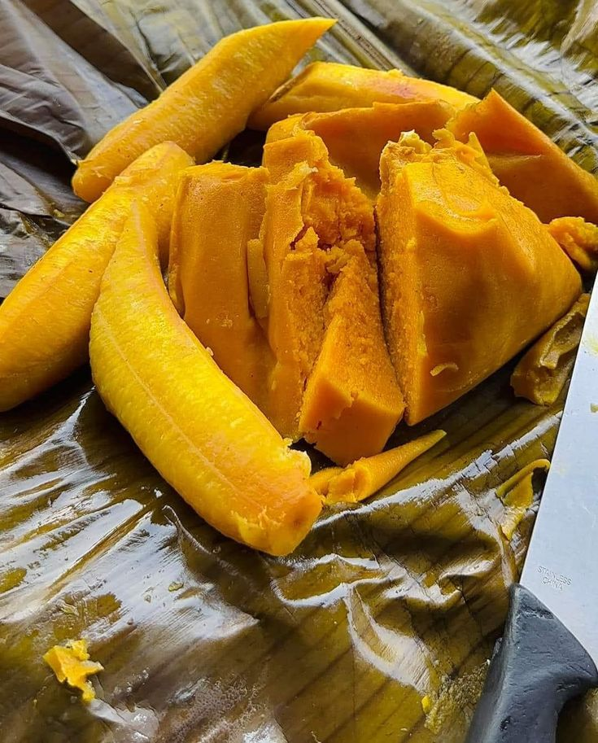

l'Art de mieux
cuisiner
découvrons ensemble l'univert des plats du terrios et d'alleuir entre saveur et beauté embarquons ensemble pour une aventure gustative hors du commun
.jpg)
découvrons ensemble l'univert des plats du terrios et d'alleuir entre saveur et beauté embarquons ensemble pour une aventure gustative hors du commun
cliquez sur voir la recette sous chaque plats pour découvrir les ingredients et les étapes de cuisson bien détaillées

le plats national du cameroun : composer principalement de feuille de ndolé , arachides, crevettes et viandes.

riz local sauter aux legumes et viandes trés rapides a faires .
.jpg )
poisson frais grillé aux épices accompagner de baton de manoic et de pate de piment .

poisson frais grillé aux épices accompagner de baton de manoic et de pate de piment .

poisson frais grillé aux épices accompagner de baton de manoic et de pate de piment .
.jpg)
poisson frais grillé aux épices accompagner de baton de manoic et de pate de piment .
chaque recette raconte une histoire sur la tradition culinaire du pays
.jpg)
plats traditionel emblématique de la zone anglophone du cameroun composer principalement trois piéces :couscous de mais , légume sauter et de poulets du village grillé vraie regale.

sauce noire parfumer aux épices locales et piosson d'eau douces un vrai délices .
.jpg)
authentic plats camerounais faire a base de mais, 'harricot , viande et condiment locaux .
.jpg)
pilé de pomme de terre et d'harricot noire , d'huile de palme et d'oignion .

plats emblématique du cameroun faire a base de feuille d'okok et waterleaf, huile traditionell de palme et beaucoup de viande poisson fumer et crevette sécher vrais master class .
.jpg)
plats traditionnel de la region du ouest cameroun , ce plats est realiser a base de taro pilé dans un mortier et de sauce jaune obstaclé faire avec de l'huile de palme, de sel germe et d'eau .

pilé de pomme de terre et d'harricot noire , d'huile de palme et d'oignion .
.jpg)
pilé de pomme de terre et d'harricot noire , d'huile de palme et d'oignion .

pilé de pomme de terre et d'harricot noire , d'huile de palme et d'oignion .